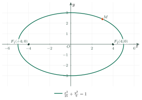
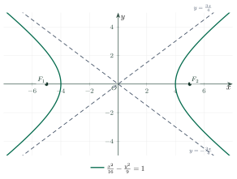
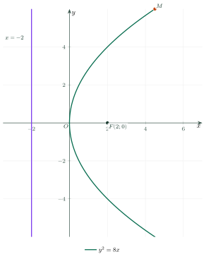

The Three ConicsBa đường conic
Grade 10 · Topic: Coordinate Geometry in the PlaneLớp 10 · Chủ đề: Phương pháp tọa độ trong mặt phẳng
1Lesson IntroductionGiới thiệu bài học
Learning goalsMục tiêu bài học
By the end of this lesson you can:
Sau bài học này, em có thể:
recognise the ellipse, the hyperbola and the parabola from their definitions;
nhận biết đường elip, đường hypebol, đường parabol qua định nghĩa;
read and write their standard equations, foci and other features;
đọc và viết phương trình chính tắc, xác định tiêu điểm, đỉnh, độ dài các trục, đường chuẩn;
use the focal properties \(MF_1+MF_2=2a\), \(|MF_1-MF_2|=2a\), \(MF=d(M,\Delta)\);
vận dụng tính chất \(MF_1+MF_2=2a\), \(|MF_1-MF_2|=2a\), \(MF=d(M,\Delta)\);
model real objects: orbits, cooling towers, satellite dishes.
mô hình hóa các vật thể thực tế: quỹ đạo, tháp làm nguội, chảo ăng-ten.
2Mathematical VocabularyTừ vựng Toán học
ellipse – the set of points \(M\) with \(MF_1+MF_2=2a\) (\(2a\gt F_1F_2\)).
đường elip – tập hợp các điểm \(M\) có \(MF_1+MF_2=2a\) (\(2a\gt F_1F_2\)).
hyperbola – the set of points \(M\) with \(|MF_1-MF_2|=2a\) (\(0\lt2a\lt F_1F_2\)).
đường hypebol – tập hợp các điểm \(M\) có \(|MF_1-MF_2|=2a\) (\(0\lt2a\lt F_1F_2\)).
parabola (conic) – the set of points equidistant from a focus \(F\) and a directrix \(\Delta\).
đường parabol (conic) – tập hợp các điểm cách đều tiêu điểm \(F\) và đường chuẩn \(\Delta\).
focus (plural foci) – a fixed point used to define a conic.
tiêu điểm – điểm cố định dùng để định nghĩa đường conic.
directrix – the fixed line in the definition of a parabola.
đường chuẩn – đường thẳng cố định trong định nghĩa parabol.
3Useful English PhrasesCụm từ tiếng Anh thường gặp
The sum of the distances to the two foci is constant.
Tổng khoảng cách đến hai tiêu điểm không đổi.
The ellipse has major axis ten and minor axis six.
Elip có trục lớn bằng 10 và trục nhỏ bằng 6.
Every point of a parabola is equidistant from the focus and the directrix.
Mọi điểm của parabol cách đều tiêu điểm và đường chuẩn.
The asymptotes of the hyperbola are dashed lines.
Các đường tiệm cận của hypebol vẽ bằng nét đứt.
Write the standard equation.
Viết phương trình chính tắc.
4Prerequisite ReviewÔn tập kiến thức nền
From Bài 21: distance \(MF=\sqrt{(x-x_F)^2+(y-y_F)^2}\). From Bài 20: \(d(M,\Delta)\). From Bài 16: the graph of \(y=ax^2\) is a parabola.
Từ Bài 21: khoảng cách \(MF=\sqrt{(x-x_F)^2+(y-y_F)^2}\). Từ Bài 20: \(d(M,\Delta)\). Từ Bài 16: đồ thị \(y=ax^2\) là một parabol.
5TheoryLý thuyết
5.1 The ellipseĐường elip
Definition and standard equationĐịnh nghĩa và phương trình chính tắc
Given \(F_1\), \(F_2\) with \(F_1F_2=2c\) and \(a\gt c\gt0\): the ellipse is the set of points \(M\) with \(MF_1+MF_2=2a\).
Cho \(F_1\), \(F_2\) với \(F_1F_2=2c\) và \(a\gt c\gt0\): elip là tập hợp các điểm \(M\) sao cho \(MF_1+MF_2=2a\).
With \(F_1(-c;0)\), \(F_2(c;0)\): \(\dfrac{x^2}{a^2}+\dfrac{y^2}{b^2}=1\), \(a\gt b\gt0\), \(b^2=a^2-c^2\).
Với \(F_1(-c;0)\), \(F_2(c;0)\): \(\dfrac{x^2}{a^2}+\dfrac{y^2}{b^2}=1\), \(a\gt b\gt0\), \(b^2=a^2-c^2\).
Vertices \((\pm a;0)\), \((0;\pm b)\); major axis \(2a\), minor axis \(2b\), focal distance \(2c\).
Đỉnh \((\pm a;0)\), \((0;\pm b)\); trục lớn \(2a\), trục nhỏ \(2b\), tiêu cự \(2c\).

5.2 The hyperbolaĐường hypebol
Definition and standard equationĐịnh nghĩa và phương trình chính tắc
Given \(F_1F_2=2c\) and \(0\lt a\lt c\): the hyperbola is the set of points \(M\) with \(|MF_1-MF_2|=2a\).
Cho \(F_1F_2=2c\) và \(0\lt a\lt c\): hypebol là tập hợp các điểm \(M\) sao cho \(|MF_1-MF_2|=2a\).
Standard equation \(\dfrac{x^2}{a^2}-\dfrac{y^2}{b^2}=1\) with \(b^2=c^2-a^2\); foci \((\pm c;0)\), vertices \((\pm a;0)\). It has two branches and two asymptotes \(y=\pm\dfrac bax\) (dashed in the figure).
Phương trình chính tắc \(\dfrac{x^2}{a^2}-\dfrac{y^2}{b^2}=1\) với \(b^2=c^2-a^2\); tiêu điểm \((\pm c;0)\), đỉnh \((\pm a;0)\). Hypebol có hai nhánh và hai đường tiệm cận \(y=\pm\dfrac bax\) (nét đứt trong hình).

5.3 The parabolaĐường parabol
Definition and standard equationĐịnh nghĩa và phương trình chính tắc
Given a point \(F\) and a line \(\Delta\) not through \(F\): the parabola is the set of points \(M\) with \(MF=d(M,\Delta)\).
Cho điểm \(F\) và đường thẳng \(\Delta\) không đi qua \(F\): parabol là tập hợp các điểm \(M\) sao cho \(MF=d(M,\Delta)\).
Standard equation \(y^2=2px\) (\(p\gt0\)): focus \(F\left(\frac p2;0\right)\), directrix \(x=-\frac p2\), vertex \(O\). For \(M(x;y)\) on it: \(MF=x+\frac p2\).
Phương trình chính tắc \(y^2=2px\) (\(p\gt0\)): tiêu điểm \(F\left(\frac p2;0\right)\), đường chuẩn \(x=-\frac p2\), đỉnh \(O\). Với \(M(x;y)\) thuộc parabol: \(MF=x+\frac p2\).

Conics around usConic quanh ta
Planets and satellites move on ellipses with the Sun (or the Earth) at a focus.
Hành tinh, vệ tinh chuyển động trên quỹ đạo elip, Mặt Trời (hoặc Trái Đất) ở một tiêu điểm.
Cooling towers of power plants have hyperbolic sides: strong and easy to build with straight beams.
Tháp làm nguội của nhà máy điện có mặt cắt là hypebol: chắc chắn và dựng được bằng các thanh thẳng.
Rays parallel to the axis of a parabolic mirror are reflected to the focus: satellite dishes, solar cookers, car headlights.
Tia song song với trục của gương parabol phản xạ hội tụ tại tiêu điểm: chảo ăng-ten, bếp năng lượng mặt trời, đèn pha ô tô.
6Worked ExamplesVí dụ có lời giải
ExampleVí dụ 1BasicCơ bản – Reading an ellipseĐọc các yếu tố của elip
For \((E): \dfrac{x^2}{25}+\dfrac{y^2}{9}=1\), find the foci, the vertices and the lengths of the axes.
Cho \((E): \dfrac{x^2}{25}+\dfrac{y^2}{9}=1\). Tìm tiêu điểm, các đỉnh, độ dài các trục.
Analysis: \(a^2=25\), \(b^2=9\), \(c^2=a^2-b^2\).
Phân tích: \(a^2=25\), \(b^2=9\), \(c^2=a^2-b^2\).
\(a=5\), \(b=3\), \(c=\sqrt{25-9}=4\).
\(a=5\), \(b=3\), \(c=\sqrt{25-9}=4\).
Foci \(F_1(-4;0)\), \(F_2(4;0)\); vertices \((\pm5;0)\), \((0;\pm3)\).
Tiêu điểm \(F_1(-4;0)\), \(F_2(4;0)\); đỉnh \((\pm5;0)\), \((0;\pm3)\).
Major axis 10, minor axis 6, focal distance 8.
Trục lớn 10, trục nhỏ 6, tiêu cự 8.
ExampleVí dụ 2BasicCơ bản – Writing an ellipseViết phương trình elip
Write the standard equation of the ellipse with major axis 10 and focal distance 6.
Viết phương trình chính tắc của elip có độ dài trục lớn 10 và tiêu cự 6.
Analysis: \(2a=10\), \(2c=6\).
Phân tích: \(2a=10\), \(2c=6\).
\(a=5\), \(c=3\), \(b^2=25-9=16\).
\(a=5\), \(c=3\), \(b^2=25-9=16\).
\(\dfrac{x^2}{25}+\dfrac{y^2}{16}=1\).
\(\dfrac{x^2}{25}+\dfrac{y^2}{16}=1\).
ExampleVí dụ 3IntermediateTrung bình – A point on a hyperbolaĐiểm trên hypebol
For \((H): \dfrac{x^2}{16}-\dfrac{y^2}{9}=1\): find the foci. A point \(M\in(H)\) has \(MF_1=9\). Find \(MF_2\).
Cho \((H): \dfrac{x^2}{16}-\dfrac{y^2}{9}=1\). Tìm tiêu điểm. Điểm \(M\in(H)\) có \(MF_1=9\). Tính \(MF_2\).
Analysis: \(c^2=a^2+b^2\); \(|MF_1-MF_2|=2a\).
Phân tích: \(c^2=a^2+b^2\); \(|MF_1-MF_2|=2a\).
\(a=4\), \(b=3\), \(c=5\): \(F_1(-5;0)\), \(F_2(5;0)\).
\(a=4\), \(b=3\), \(c=5\): \(F_1(-5;0)\), \(F_2(5;0)\).
\(|9-MF_2|=8\Rightarrow MF_2=1\) or \(MF_2=17\).
\(|9-MF_2|=8\Rightarrow MF_2=1\) hoặc \(MF_2=17\).
Both occur: \(MF_2=1\) at the vertex \((4;0)\); \(MF_2=17\) on the left branch.
Cả hai đều xảy ra: \(MF_2=1\) tại đỉnh \((4;0)\); \(MF_2=17\) trên nhánh trái.
\(MF_2=1\) or \(MF_2=17\).
\(MF_2=1\) hoặc \(MF_2=17\).
ExampleVí dụ 4IntermediateTrung bình – Focus and directrixTiêu điểm và đường chuẩn
For \((P): y^2=8x\): find the focus and the directrix. A point \(M\in(P)\) has \(x_M=3\); find \(MF\) and \(y_M\).
Cho \((P): y^2=8x\). Tìm tiêu điểm, đường chuẩn. Điểm \(M\in(P)\) có hoành độ 3; tính \(MF\) và \(y_M\).
Analysis: \(2p=8\).
Phân tích: \(2p=8\).
\(p=4\): \(F(2;0)\), \(\Delta: x=-2\).
\(p=4\): \(F(2;0)\), \(\Delta: x=-2\).
\(MF=d(M,\Delta)=3+2=5\); \(y_M^2=24\Rightarrow y_M=\pm2\sqrt6\).
\(MF=d(M,\Delta)=3+2=5\); \(y_M^2=24\Rightarrow y_M=\pm2\sqrt6\).
\(F(2;0)\), \(x=-2\), \(MF=5\), \(y_M=\pm2\sqrt6\).
\(F(2;0)\), \(x=-2\), \(MF=5\), \(y_M=\pm2\sqrt6\).
ExampleVí dụ 5AdvancedNâng cao – Where to put the receiver?Đặt đầu thu ở đâu?
A satellite dish has a parabolic cross-section, diameter 80 cm and depth 10 cm. How far from the vertex must the receiver be?
Một chảo ăng-ten có thiết diện là parabol, đường kính miệng 80 cm, độ sâu 10 cm. Đầu thu phải đặt cách đỉnh chảo bao xa?
Analysis: Put the vertex at \(O\), the axis along \(Ox\): \(y^2=2px\) passes through \((10;40)\).
Phân tích: Đặt đỉnh tại \(O\), trục chảo theo \(Ox\): \(y^2=2px\) đi qua \((10;40)\).
\(1600=2p\cdot10\Rightarrow2p=160\), \(p=80\).
\(1600=2p\cdot10\Rightarrow2p=160\), \(p=80\).
The focus is at \(\frac p2=40\) cm: incoming parallel signals are reflected there.
Tiêu điểm cách đỉnh \(\frac p2=40\) cm: tín hiệu song song với trục phản xạ hội tụ tại đó.
40 cm from the vertex, on the axis.
Cách đỉnh 40 cm, trên trục của chảo.
7PracticeBài tập luyện tập
A. Multiple ChoiceA. Trắc nghiệm nhiều lựa chọn
The foci of \(\dfrac{x^2}{25}+\dfrac{y^2}{16}=1\) are…
Tiêu điểm của elip \(\dfrac{x^2}{25}+\dfrac{y^2}{16}=1\) là…
Answer: c. \(c^2=a^2-b^2\).
Đáp án c. \(c^2=a^2-b^2=9\Rightarrow c=3\).
The hyperbola with vertices \((\pm3;0)\) and foci \((\pm5;0)\) is…
Hypebol có đỉnh \((\pm3;0)\) và tiêu điểm \((\pm5;0)\) là…
Answer: c. \(b^2=c^2-a^2\).
Đáp án c. \(b^2=c^2-a^2=16\).
The focus of the parabola \(y^2=12x\) is…
Tiêu điểm của parabol \(y^2=12x\) là…
Answer: d. \(2p=12\), \(F(\frac p2;0)\).
Đáp án d. \(2p=12\Rightarrow p=6\), \(F\left(\frac p2;0\right)\).
B. True or FalseB. Đúng hoặc sai
For every \(M\) on \(\dfrac{x^2}{36}+\dfrac{y^2}{20}=1\): \(MF_1+MF_2=12\).
Với mọi điểm \(M\) thuộc elip \(\dfrac{x^2}{36}+\dfrac{y^2}{20}=1\): \(MF_1+MF_2=12\).
\(MF_1+MF_2=2a=12\).
\(MF_1+MF_2=2a=12\).
\(\dfrac{x^2}{16}-\dfrac{y^2}{9}=1\) is an ellipse.
\(\dfrac{x^2}{16}-\dfrac{y^2}{9}=1\) là đường elip.
It is a hyperbola.
Đó là đường hypebol.
C. Short AnswerC. Trả lời ngắn
Find the focal distance \(F_1F_2\) of \(\dfrac{x^2}{100}+\dfrac{y^2}{64}=1\).
Tính tiêu cự \(F_1F_2\) của elip \(\dfrac{x^2}{100}+\dfrac{y^2}{64}=1\).
Enter a number.
Nhập một số.
\(c=\sqrt{a^2-b^2}=6\).
\(c=\sqrt{a^2-b^2}=6\Rightarrow F_1F_2=2c=12\).
A satellite dish (parabolic section) has diameter 60 cm and depth 5 cm. How many centimetres from the vertex is the focus?
Chảo ăng-ten (thiết diện parabol) có đường kính miệng 60 cm và độ sâu 5 cm. Tiêu điểm cách đỉnh chảo bao nhiêu xentimét?
Enter a number.
Nhập một số.
\(y^2=2px\) through \((5;30)\).
\(y^2=2px\) đi qua \((5;30)\): \(2p=180\), tiêu điểm cách đỉnh \(\frac p2=45\) cm.
A. Multiple ChoiceA. Trắc nghiệm nhiều lựa chọn
The foci of \(\dfrac{x^2}{169}+\dfrac{y^2}{144}=1\) are…
Tiêu điểm của elip \(\dfrac{x^2}{169}+\dfrac{y^2}{144}=1\) là…
Answer: c. \(c^2=a^2-b^2\).
Đáp án c. \(c^2=a^2-b^2=25\Rightarrow c=5\).
The hyperbola with vertices \((\pm4;0)\) and foci \((\pm5;0)\) is…
Hypebol có đỉnh \((\pm4;0)\) và tiêu điểm \((\pm5;0)\) là…
Answer: c. \(b^2=c^2-a^2\).
Đáp án c. \(b^2=c^2-a^2=9\).
The focus of the parabola \(y^2=6x\) is…
Tiêu điểm của parabol \(y^2=6x\) là…
Answer: c. \(2p=6\), \(F(\frac p2;0)\).
Đáp án c. \(2p=6\Rightarrow p=3\), \(F\left(\frac p2;0\right)\).
B. True or FalseB. Đúng hoặc sai
For every \(M\) on \(\dfrac{x^2}{49}+\dfrac{y^2}{24}=1\): \(MF_1+MF_2=7\).
Với mọi điểm \(M\) thuộc elip \(\dfrac{x^2}{49}+\dfrac{y^2}{24}=1\): \(MF_1+MF_2=7\).
\(MF_1+MF_2=2a=14\).
\(MF_1+MF_2=2a=14\).
\(y^2=10x\) is a parabola.
\(y^2=10x\) là đường parabol.
It is a parabola.
Đó là đường parabol.
C. Short AnswerC. Trả lời ngắn
Find the focal distance \(F_1F_2\) of \(\dfrac{x^2}{169}+\dfrac{y^2}{144}=1\).
Tính tiêu cự \(F_1F_2\) của elip \(\dfrac{x^2}{169}+\dfrac{y^2}{144}=1\).
Enter a number.
Nhập một số.
\(c=\sqrt{a^2-b^2}=5\).
\(c=\sqrt{a^2-b^2}=5\Rightarrow F_1F_2=2c=10\).
A satellite dish (parabolic section) has diameter 120 cm and depth 15 cm. How many centimetres from the vertex is the focus?
Chảo ăng-ten (thiết diện parabol) có đường kính miệng 120 cm và độ sâu 15 cm. Tiêu điểm cách đỉnh chảo bao nhiêu xentimét?
Enter a number.
Nhập một số.
\(y^2=2px\) through \((15;60)\).
\(y^2=2px\) đi qua \((15;60)\): \(2p=240\), tiêu điểm cách đỉnh \(\frac p2=60\) cm.
A. Multiple ChoiceA. Trắc nghiệm nhiều lựa chọn
The foci of \(\dfrac{x^2}{100}+\dfrac{y^2}{36}=1\) are…
Tiêu điểm của elip \(\dfrac{x^2}{100}+\dfrac{y^2}{36}=1\) là…
Answer: c. \(c^2=a^2-b^2\).
Đáp án c. \(c^2=a^2-b^2=64\Rightarrow c=8\).
The hyperbola with vertices \((\pm12;0)\) and foci \((\pm13;0)\) is…
Hypebol có đỉnh \((\pm12;0)\) và tiêu điểm \((\pm13;0)\) là…
Answer: a. \(b^2=c^2-a^2\).
Đáp án a. \(b^2=c^2-a^2=25\).
The focus of the parabola \(y^2=20x\) is…
Tiêu điểm của parabol \(y^2=20x\) là…
Answer: d. \(2p=20\), \(F(\frac p2;0)\).
Đáp án d. \(2p=20\Rightarrow p=10\), \(F\left(\frac p2;0\right)\).
B. True or FalseB. Đúng hoặc sai
For every \(M\) on \(\dfrac{x^2}{25}+\dfrac{y^2}{9}=1\): \(MF_1+MF_2=10\).
Với mọi điểm \(M\) thuộc elip \(\dfrac{x^2}{25}+\dfrac{y^2}{9}=1\): \(MF_1+MF_2=10\).
\(MF_1+MF_2=2a=10\).
\(MF_1+MF_2=2a=10\).
\(\dfrac{x^2}{9}+\dfrac{y^2}{4}=1\) is a hyperbola.
\(\dfrac{x^2}{9}+\dfrac{y^2}{4}=1\) là đường hypebol.
It is an ellipse.
Đó là đường elip.
C. Short AnswerC. Trả lời ngắn
Find the focal distance \(F_1F_2\) of \(\dfrac{x^2}{289}+\dfrac{y^2}{225}=1\).
Tính tiêu cự \(F_1F_2\) của elip \(\dfrac{x^2}{289}+\dfrac{y^2}{225}=1\).
Enter a number.
Nhập một số.
\(c=\sqrt{a^2-b^2}=8\).
\(c=\sqrt{a^2-b^2}=8\Rightarrow F_1F_2=2c=16\).
A satellite dish (parabolic section) has diameter 40 cm and depth 4 cm. How many centimetres from the vertex is the focus?
Chảo ăng-ten (thiết diện parabol) có đường kính miệng 40 cm và độ sâu 4 cm. Tiêu điểm cách đỉnh chảo bao nhiêu xentimét?
Enter a number.
Nhập một số.
\(y^2=2px\) through \((4;20)\).
\(y^2=2px\) đi qua \((4;20)\): \(2p=100\), tiêu điểm cách đỉnh \(\frac p2=25\) cm.
D. Self-practice: Multiple ChoiceD. Tự luyện: trắc nghiệm
The ellipse \(\dfrac{x^2}{225}+\dfrac{y^2}{144}=1\) has…
Elip \(\dfrac{x^2}{225}+\dfrac{y^2}{144}=1\) có độ dài…
Answer: a. \(a=15\), \(b=12\); axes \(2a\), \(2b\).
Đáp án a. \(a=15\), \(b=12\); trục lớn \(2a=30\), trục nhỏ \(2b=24\).
The foci of the ellipse \(\dfrac{x^2}{289}+\dfrac{y^2}{64}=1\) are…
Tiêu điểm của elip \(\dfrac{x^2}{289}+\dfrac{y^2}{64}=1\) là…
Answer: d. \(c^2=a^2-b^2=225\).
Đáp án d. Với elip: \(c^2=a^2-b^2=289-64=225\Rightarrow c=15\).
An ellipse (standard form) has major axis \(30\) and focal distance \(F_1F_2=18\). Its equation is…
Elip (dạng chính tắc) có độ dài trục lớn \(30\) và tiêu cự \(18\). Phương trình của elip là…
Answer: a. \(a=15\), \(c=9\), \(b^2=a^2-c^2=144\).
Đáp án a. \(a=15\), \(c=9\), \(b^2=a^2-c^2=144\).
\(M\) lies on the ellipse \(\dfrac{x^2}{169}+\dfrac{y^2}{25}=1\) with foci \(F_1\), \(F_2\). Then \(MF_1+MF_2=\)…
Điểm \(M\) thuộc elip \(\dfrac{x^2}{169}+\dfrac{y^2}{25}=1\) có hai tiêu điểm \(F_1\), \(F_2\). Khi đó \(MF_1+MF_2=\)…
Answer: b. \(MF_1+MF_2=2a\).
Đáp án b. Theo định nghĩa elip: \(MF_1+MF_2=2a=26\).
The foci of the hyperbola \(\dfrac{x^2}{36}-\dfrac{y^2}{64}=1\) are…
Tiêu điểm của hypebol \(\dfrac{x^2}{36}-\dfrac{y^2}{64}=1\) là…
Answer: c. For a hyperbola \(c^2=a^2+b^2\).
Đáp án c. Với hypebol: \(c^2=a^2+b^2=100\Rightarrow c=10\).
The asymptotes of the hyperbola \(\dfrac{x^2}{225}-\dfrac{y^2}{64}=1\) are…
Hai đường tiệm cận của hypebol \(\dfrac{x^2}{225}-\dfrac{y^2}{64}=1\) là…
Answer: c. \(y=\pm\dfrac bax\).
Đáp án c. Tiệm cận của hypebol: \(y=\pm\dfrac bax=\pm\dfrac{8}{15}x\).
\(M\) lies on the hyperbola \(\dfrac{x^2}{64}-\dfrac{y^2}{36}=1\). Then \(|MF_1-MF_2|=\)…
Điểm \(M\) thuộc hypebol \(\dfrac{x^2}{64}-\dfrac{y^2}{36}=1\). Khi đó \(|MF_1-MF_2|=\)…
Answer: a. \(|MF_1-MF_2|=2a\).
Đáp án a. Theo định nghĩa hypebol: \(|MF_1-MF_2|=2a=16\).
The focus and directrix of the parabola \(y^2=1x\) are…
Tiêu điểm và đường chuẩn của parabol \(y^2=1x\) là…
Answer: c. \(y^2=2px\) with \(p=\dfrac{1}{2}\): \(F(\tfrac p2;0)\), \(x=-\tfrac p2\).
Đáp án c. \(y^2=2px\) với \(p=\dfrac{1}{2}\): tiêu điểm \(F\left(\tfrac p2;0\right)\), đường chuẩn \(x=-\tfrac p2\).
\(M\) on the parabola \(y^2=16x\) has \(x_M=3\). Its distance to the focus is…
Điểm \(M\) thuộc parabol \(y^2=16x\) có hoành độ \(3\). Khoảng cách từ \(M\) đến tiêu điểm là…
Answer: c. \(MF=d(M,\Delta)=x_M+\dfrac p2\).
Đáp án c. \(MF=d(M,\Delta)=x_M+\dfrac p2=3+4\).
The curve \(y^2=10x\) is…
Đường cong \(y^2=10x\) là…
Answer: c. Compare with the three standard forms.
Đáp án c. So sánh với ba dạng chính tắc: \(\frac{x^2}{a^2}+\frac{y^2}{b^2}=1\) (elip), \(\frac{x^2}{a^2}-\frac{y^2}{b^2}=1\) (hypebol), \(y^2=2px\) (parabol).
A satellite dish has a parabolic cross-section: diameter 80 cm, depth 10 cm. Its receiver must be at the focus, at distance … from the vertex.
Một chảo ăng-ten có thiết diện là parabol: đường kính miệng 80 cm, độ sâu 10 cm. Đầu thu đặt tại tiêu điểm, cách đỉnh chảo…
Answer: a. \(y^2=2px\) through \((10;40)\): \(2p=160\); focus at \(\tfrac p2\).
Đáp án a. \(y^2=2px\) đi qua \((10;40)\) nên \(2p=\dfrac{1600}{10}=160\); tiêu điểm cách đỉnh \(\dfrac p2=40\) cm.
D. Self-practice: Multiple ChoiceD. Tự luyện: trắc nghiệm
The ellipse \(\dfrac{x^2}{289}+\dfrac{y^2}{225}=1\) has…
Elip \(\dfrac{x^2}{289}+\dfrac{y^2}{225}=1\) có độ dài…
Answer: b. \(a=17\), \(b=15\); axes \(2a\), \(2b\).
Đáp án b. \(a=17\), \(b=15\); trục lớn \(2a=34\), trục nhỏ \(2b=30\).
The foci of the ellipse \(\dfrac{x^2}{169}+\dfrac{y^2}{25}=1\) are…
Tiêu điểm của elip \(\dfrac{x^2}{169}+\dfrac{y^2}{25}=1\) là…
Answer: c. \(c^2=a^2-b^2=144\).
Đáp án c. Với elip: \(c^2=a^2-b^2=169-25=144\Rightarrow c=12\).
An ellipse (standard form) has major axis \(34\) and focal distance \(F_1F_2=30\). Its equation is…
Elip (dạng chính tắc) có độ dài trục lớn \(34\) và tiêu cự \(30\). Phương trình của elip là…
Answer: c. \(a=17\), \(c=15\), \(b^2=a^2-c^2=64\).
Đáp án c. \(a=17\), \(c=15\), \(b^2=a^2-c^2=64\).
\(M\) lies on the ellipse \(\dfrac{x^2}{289}+\dfrac{y^2}{64}=1\) with foci \(F_1\), \(F_2\). Then \(MF_1+MF_2=\)…
Điểm \(M\) thuộc elip \(\dfrac{x^2}{289}+\dfrac{y^2}{64}=1\) có hai tiêu điểm \(F_1\), \(F_2\). Khi đó \(MF_1+MF_2=\)…
Answer: a. \(MF_1+MF_2=2a\).
Đáp án a. Theo định nghĩa elip: \(MF_1+MF_2=2a=34\).
The foci of the hyperbola \(\dfrac{x^2}{225}-\dfrac{y^2}{64}=1\) are…
Tiêu điểm của hypebol \(\dfrac{x^2}{225}-\dfrac{y^2}{64}=1\) là…
Answer: a. For a hyperbola \(c^2=a^2+b^2\).
Đáp án a. Với hypebol: \(c^2=a^2+b^2=289\Rightarrow c=17\).
The asymptotes of the hyperbola \(\dfrac{x^2}{9}-\dfrac{y^2}{16}=1\) are…
Hai đường tiệm cận của hypebol \(\dfrac{x^2}{9}-\dfrac{y^2}{16}=1\) là…
Answer: a. \(y=\pm\dfrac bax\).
Đáp án a. Tiệm cận của hypebol: \(y=\pm\dfrac bax=\pm\dfrac{4}{3}x\).
\(M\) lies on the hyperbola \(\dfrac{x^2}{225}-\dfrac{y^2}{64}=1\). Then \(|MF_1-MF_2|=\)…
Điểm \(M\) thuộc hypebol \(\dfrac{x^2}{225}-\dfrac{y^2}{64}=1\). Khi đó \(|MF_1-MF_2|=\)…
Answer: b. \(|MF_1-MF_2|=2a\).
Đáp án b. Theo định nghĩa hypebol: \(|MF_1-MF_2|=2a=30\).
The focus and directrix of the parabola \(y^2=6x\) are…
Tiêu điểm và đường chuẩn của parabol \(y^2=6x\) là…
Answer: d. \(y^2=2px\) with \(p=3\): \(F(\tfrac p2;0)\), \(x=-\tfrac p2\).
Đáp án d. \(y^2=2px\) với \(p=3\): tiêu điểm \(F\left(\tfrac p2;0\right)\), đường chuẩn \(x=-\tfrac p2\).
\(M\) on the parabola \(y^2=12x\) has \(x_M=1\). Its distance to the focus is…
Điểm \(M\) thuộc parabol \(y^2=12x\) có hoành độ \(1\). Khoảng cách từ \(M\) đến tiêu điểm là…
Answer: c. \(MF=d(M,\Delta)=x_M+\dfrac p2\).
Đáp án c. \(MF=d(M,\Delta)=x_M+\dfrac p2=1+3\).
The curve \(\dfrac{x^2}{100}+\dfrac{y^2}{36}=1\) is…
Đường cong \(\dfrac{x^2}{100}+\dfrac{y^2}{36}=1\) là…
Answer: b. Compare with the three standard forms.
Đáp án b. So sánh với ba dạng chính tắc: \(\frac{x^2}{a^2}+\frac{y^2}{b^2}=1\) (elip), \(\frac{x^2}{a^2}-\frac{y^2}{b^2}=1\) (hypebol), \(y^2=2px\) (parabol).
A satellite dish has a parabolic cross-section: diameter 100 cm, depth 20 cm. Its receiver must be at the focus, at distance … from the vertex.
Một chảo ăng-ten có thiết diện là parabol: đường kính miệng 100 cm, độ sâu 20 cm. Đầu thu đặt tại tiêu điểm, cách đỉnh chảo…
Answer: a. \(y^2=2px\) through \((20;50)\): \(2p=125\); focus at \(\tfrac p2\).
Đáp án a. \(y^2=2px\) đi qua \((20;50)\) nên \(2p=\dfrac{2500}{20}=125\); tiêu điểm cách đỉnh \(\dfrac p2=\dfrac{125}{4}\) cm.
D. Self-practice: Multiple ChoiceD. Tự luyện: trắc nghiệm
The ellipse \(\dfrac{x^2}{25}+\dfrac{y^2}{16}=1\) has…
Elip \(\dfrac{x^2}{25}+\dfrac{y^2}{16}=1\) có độ dài…
Answer: b. \(a=5\), \(b=4\); axes \(2a\), \(2b\).
Đáp án b. \(a=5\), \(b=4\); trục lớn \(2a=10\), trục nhỏ \(2b=8\).
The foci of the ellipse \(\dfrac{x^2}{25}+\dfrac{y^2}{9}=1\) are…
Tiêu điểm của elip \(\dfrac{x^2}{25}+\dfrac{y^2}{9}=1\) là…
Answer: a. \(c^2=a^2-b^2=16\).
Đáp án a. Với elip: \(c^2=a^2-b^2=25-9=16\Rightarrow c=4\).
An ellipse (standard form) has major axis \(26\) and focal distance \(F_1F_2=10\). Its equation is…
Elip (dạng chính tắc) có độ dài trục lớn \(26\) và tiêu cự \(10\). Phương trình của elip là…
Answer: b. \(a=13\), \(c=5\), \(b^2=a^2-c^2=144\).
Đáp án b. \(a=13\), \(c=5\), \(b^2=a^2-c^2=144\).
\(M\) lies on the ellipse \(\dfrac{x^2}{100}+\dfrac{y^2}{64}=1\) with foci \(F_1\), \(F_2\). Then \(MF_1+MF_2=\)…
Điểm \(M\) thuộc elip \(\dfrac{x^2}{100}+\dfrac{y^2}{64}=1\) có hai tiêu điểm \(F_1\), \(F_2\). Khi đó \(MF_1+MF_2=\)…
Answer: d. \(MF_1+MF_2=2a\).
Đáp án d. Theo định nghĩa elip: \(MF_1+MF_2=2a=20\).
The foci of the hyperbola \(\dfrac{x^2}{64}-\dfrac{y^2}{225}=1\) are…
Tiêu điểm của hypebol \(\dfrac{x^2}{64}-\dfrac{y^2}{225}=1\) là…
Answer: a. For a hyperbola \(c^2=a^2+b^2\).
Đáp án a. Với hypebol: \(c^2=a^2+b^2=289\Rightarrow c=17\).
The asymptotes of the hyperbola \(\dfrac{x^2}{144}-\dfrac{y^2}{81}=1\) are…
Hai đường tiệm cận của hypebol \(\dfrac{x^2}{144}-\dfrac{y^2}{81}=1\) là…
Answer: b. \(y=\pm\dfrac bax\).
Đáp án b. Tiệm cận của hypebol: \(y=\pm\dfrac bax=\pm\dfrac{3}{4}x\).
\(M\) lies on the hyperbola \(\dfrac{x^2}{144}-\dfrac{y^2}{25}=1\). Then \(|MF_1-MF_2|=\)…
Điểm \(M\) thuộc hypebol \(\dfrac{x^2}{144}-\dfrac{y^2}{25}=1\). Khi đó \(|MF_1-MF_2|=\)…
Answer: b. \(|MF_1-MF_2|=2a\).
Đáp án b. Theo định nghĩa hypebol: \(|MF_1-MF_2|=2a=24\).
The focus and directrix of the parabola \(y^2=8x\) are…
Tiêu điểm và đường chuẩn của parabol \(y^2=8x\) là…
Answer: c. \(y^2=2px\) with \(p=4\): \(F(\tfrac p2;0)\), \(x=-\tfrac p2\).
Đáp án c. \(y^2=2px\) với \(p=4\): tiêu điểm \(F\left(\tfrac p2;0\right)\), đường chuẩn \(x=-\tfrac p2\).
\(M\) on the parabola \(y^2=6x\) has \(x_M=8\). Its distance to the focus is…
Điểm \(M\) thuộc parabol \(y^2=6x\) có hoành độ \(8\). Khoảng cách từ \(M\) đến tiêu điểm là…
Answer: b. \(MF=d(M,\Delta)=x_M+\dfrac p2\).
Đáp án b. \(MF=d(M,\Delta)=x_M+\dfrac p2=8+\dfrac{3}{2}\).
The curve \(y^2=6x\) is…
Đường cong \(y^2=6x\) là…
Answer: b. Compare with the three standard forms.
Đáp án b. So sánh với ba dạng chính tắc: \(\frac{x^2}{a^2}+\frac{y^2}{b^2}=1\) (elip), \(\frac{x^2}{a^2}-\frac{y^2}{b^2}=1\) (hypebol), \(y^2=2px\) (parabol).
A satellite dish has a parabolic cross-section: diameter 160 cm, depth 20 cm. Its receiver must be at the focus, at distance … from the vertex.
Một chảo ăng-ten có thiết diện là parabol: đường kính miệng 160 cm, độ sâu 20 cm. Đầu thu đặt tại tiêu điểm, cách đỉnh chảo…
Answer: c. \(y^2=2px\) through \((20;80)\): \(2p=320\); focus at \(\tfrac p2\).
Đáp án c. \(y^2=2px\) đi qua \((20;80)\) nên \(2p=\dfrac{6400}{20}=320\); tiêu điểm cách đỉnh \(\dfrac p2=80\) cm.
8Common MistakesLỗi thường gặp
Using \(c^2=a^2+b^2\) for an ellipse. Ellipse: \(c^2=a^2-b^2\); hyperbola: \(c^2=a^2+b^2\).
Dùng \(c^2=a^2+b^2\) cho elip. Elip: \(c^2=a^2-b^2\); hypebol: \(c^2=a^2+b^2\).
Reading \(a\) as \(a^2\). In \(\frac{x^2}{25}+\frac{y^2}{9}=1\): \(a=5\), the major axis is 10, not 25.
Nhầm \(a\) với \(a^2\). Trong \(\frac{x^2}{25}+\frac{y^2}{9}=1\): \(a=5\), trục lớn bằng 10, không phải 25.
Focus of \(y^2=2px\) at \((p;0)\). The focus is \(\left(\frac p2;0\right)\): for \(y^2=8x\), \(p=4\), \(F(2;0)\).
Tiêu điểm của \(y^2=2px\) là \((p;0)\). Tiêu điểm là \(\left(\frac p2;0\right)\): với \(y^2=8x\), \(p=4\), \(F(2;0)\).
Forgetting the absolute value for the hyperbola. \(|MF_1-MF_2|=2a\) gives two cases.
Quên giá trị tuyệt đối ở hypebol. \(|MF_1-MF_2|=2a\) cho hai trường hợp.
9Lesson SummaryTổng kết
Ellipse: \(MF_1+MF_2=2a\); \(\frac{x^2}{a^2}+\frac{y^2}{b^2}=1\), \(b^2=a^2-c^2\).
Elip: \(MF_1+MF_2=2a\); \(\frac{x^2}{a^2}+\frac{y^2}{b^2}=1\), \(b^2=a^2-c^2\).
Hyperbola: \(|MF_1-MF_2|=2a\); \(\frac{x^2}{a^2}-\frac{y^2}{b^2}=1\), \(b^2=c^2-a^2\); asymptotes \(y=\pm\frac bax\).
Hypebol: \(|MF_1-MF_2|=2a\); \(\frac{x^2}{a^2}-\frac{y^2}{b^2}=1\), \(b^2=c^2-a^2\); tiệm cận \(y=\pm\frac bax\).
Parabola: \(MF=d(M,\Delta)\); \(y^2=2px\), \(F(\frac p2;0)\), \(\Delta: x=-\frac p2\).
Parabol: \(MF=d(M,\Delta)\); \(y^2=2px\), \(F(\frac p2;0)\), \(\Delta: x=-\frac p2\).
Key words: ellipse, hyperbola, parabola, focus, directrix, vertex, axis.
Từ cần nhớ: ellipse, hyperbola, parabola, focus, directrix, vertex, axis.